library(tidyverse)
library(scales)
ventes <- read_csv("data/ventes.csv", show_col_types = FALSE) |>
filter(!is.na(region))
meteo <- read_csv("data/meteo.csv", show_col_types = FALSE) |>
mutate(date = as.Date(date))
demo <- read_csv("data/demographie.csv", show_col_types = FALSE) |>
filter(age <= 100, revenu_mensuel < 20000)8 Visualisation des données
8.1 Introduction
Un bon graphique révèle des patterns que les tableaux peinent à montrer. Ce chapitre présente les principes de lisibilité et la grammaire des graphiques de ggplot2 : barres, histogrammes, boîtes à moustaches, nuages de points, lignes, facettes et export.
8.2 Objectifs pédagogiques
- Choisir un type de graphique adapté à la question
- Construire des graphiques ggplot2 lisibles
- Personnaliser titres, axes, couleurs et facettes
- Exporter des figures pour un rapport
- Éviter les erreurs courantes de représentation
8.3 Prérequis
- Package
ggplot2(tidyverse).
8.4 Pourquoi visualiser ?
- Détecter outliers, asymétries, clusters
- Comparer des groupes rapidement
- Communiquer à un public non statisticien
Vocabulaire ggplot2
- aes : mapping esthétique (x, y, color, fill, size…)
- geom : type de marque (barre, point, ligne…)
- scale : échelle (couleurs, axes)
- facet : petits multiples
- theme : apparence (fond, grilles, polices)
8.5 Principes de lisibilité
- Un graphique = un message principal
- Axes légendés avec unités
- Couleurs accessibles (contraste, pas seulement rouge/vert)
- Pas de 3D inutile ni de dual-axis trompeur
- Titre informatif (« CA par région en 2023 ») plutôt que décoratif
8.6 Diagrammes en barres
Objectif : comparer des quantités entre catégories.
ca_region <- ventes |>
group_by(region) |>
summarise(ca = sum(montant), .groups = "drop")
ggplot(ca_region, aes(x = reorder(region, ca), y = ca)) +
geom_col(fill = "#1a5276") +
coord_flip() +
labs(
title = "Chiffre d'affaires par région",
x = "Région", y = "CA"
) +
theme_minimal()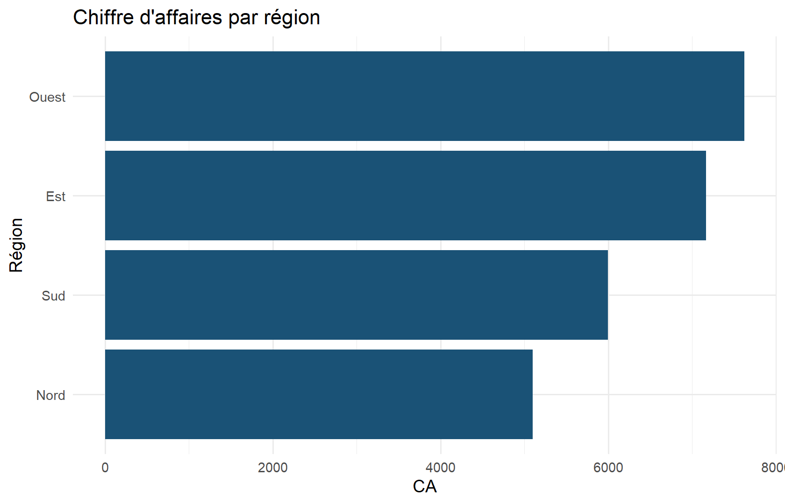
Interprétation : la longueur des barres montre le CA total ; le tri facilite le classement.
8.7 Histogrammes
Objectif : voir la distribution d’une variable quantitative.
ggplot(demo, aes(x = revenu_mensuel)) +
geom_histogram(bins = 20, fill = "#148f77", color = "white") +
labs(
title = "Distribution des revenus mensuels",
x = "Revenu mensuel", y = "Effectif"
) +
theme_minimal()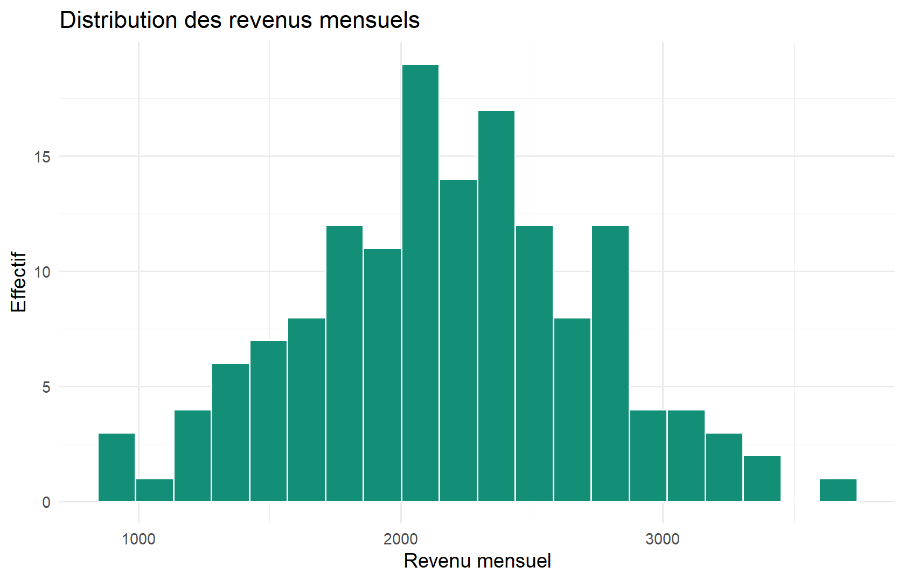
8.8 Boîtes à moustaches
Objectif : comparer distributions entre groupes (médiane, IQR, extrêmes).
ggplot(demo, aes(x = ville, y = age)) +
geom_boxplot(fill = "#d5f5e3") +
labs(title = "Âge par ville", x = NULL, y = "Âge") +
theme_minimal()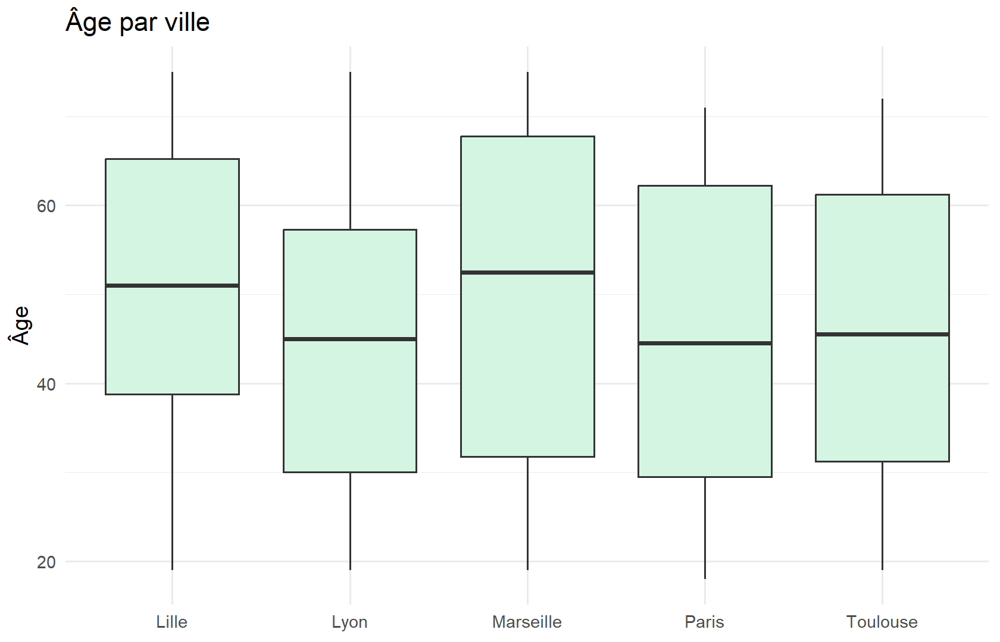
8.9 Graphiques de dispersion
Objectif : relation entre deux quantitatives.
ggplot(mtcars, aes(x = wt, y = mpg)) +
geom_point(aes(color = factor(cyl)), size = 2.5) +
geom_smooth(method = "lm", se = TRUE, color = "gray30") +
labs(
title = "Consommation selon le poids",
x = "Poids (1000 lbs)", y = "Miles / gallon",
color = "Cylindres"
) +
theme_minimal()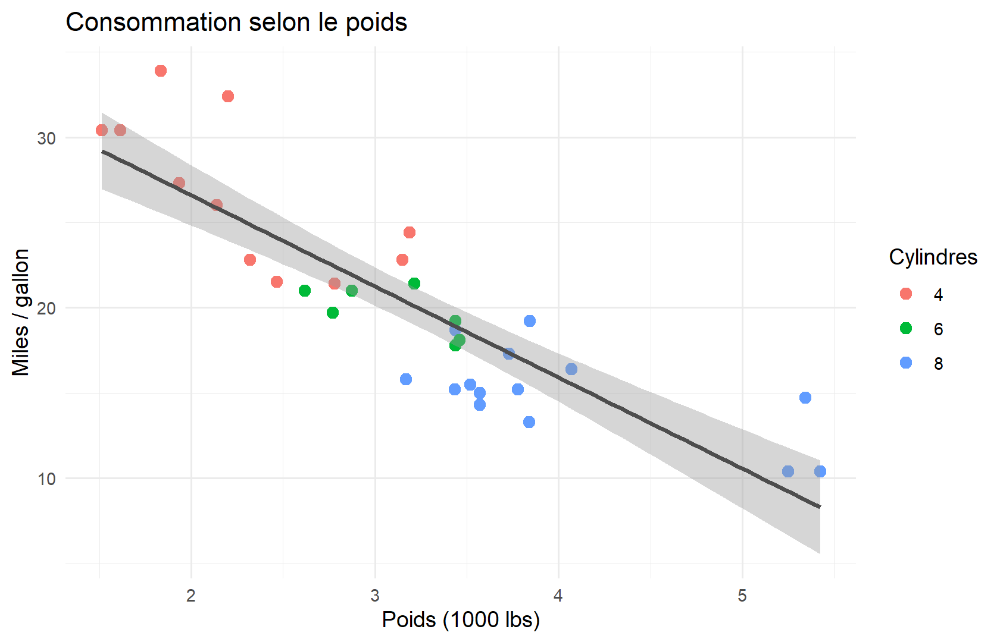
Interprétation : tendance négative ; le lissage linéaire aide à voir la pente, sans prouver la causalité.
8.10 Graphiques linéaires
Objectif : évolution dans le temps.
meteo_mois <- meteo |>
mutate(mois = floor_date(date, "month")) |>
group_by(mois) |>
summarise(temp = mean(temperature_c), .groups = "drop")
ggplot(meteo_mois, aes(x = mois, y = temp)) +
geom_line(color = "#1a5276", linewidth = 1) +
geom_point() +
labs(
title = "Température moyenne mensuelle (2023)",
x = NULL, y = "°C"
) +
theme_minimal()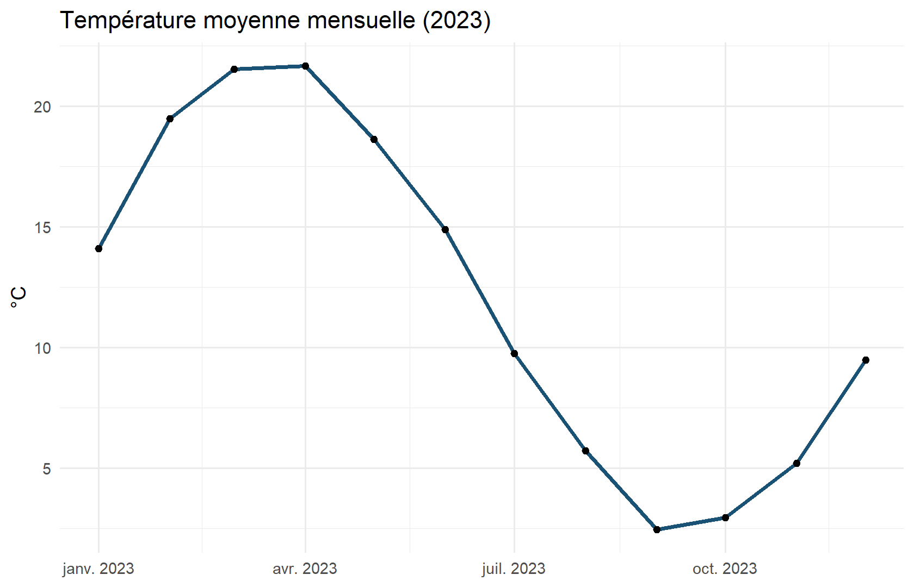
8.11 Comparaison de plusieurs groupes
ggplot(ventes, aes(x = region, y = montant, fill = region)) +
geom_violin(alpha = 0.7, show.legend = FALSE) +
geom_boxplot(width = 0.15, fill = "white", outlier.size = 0.8) +
labs(title = "Distribution des montants par région", y = "Montant") +
theme_minimal()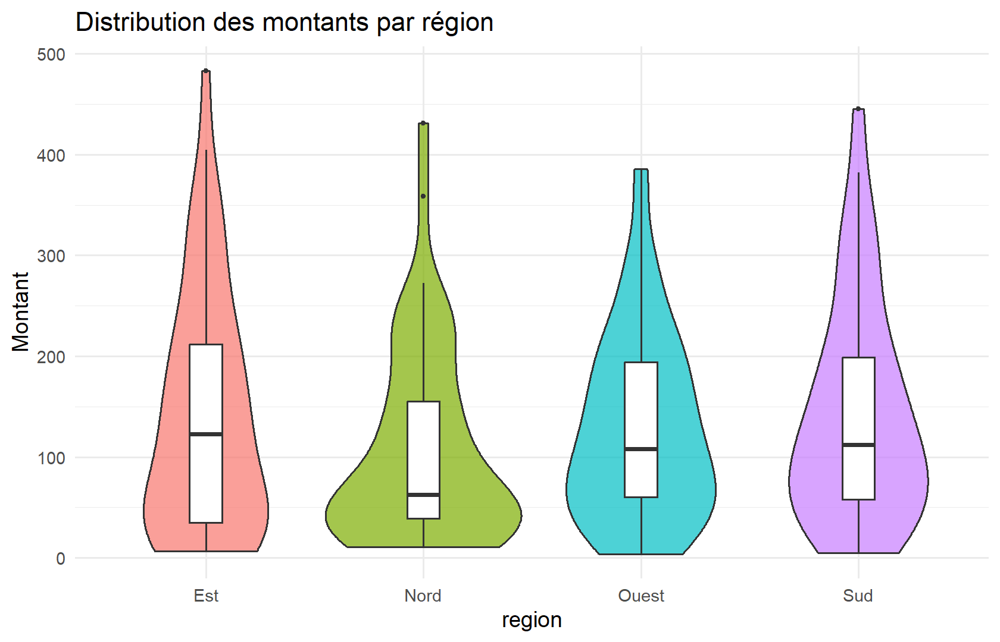
8.12 Personnalisation : titres, axes, légendes
ggplot(ca_region, aes(x = region, y = ca)) +
geom_col(fill = "#1a5276") +
scale_y_continuous(labels = label_number(big.mark = " ")) +
labs(
title = "CA par région",
subtitle = "Données pédagogiques 2023",
caption = "Source : data/ventes.csv",
x = NULL, y = "Chiffre d'affaires"
) +
theme_minimal(base_size = 12) +
theme(plot.title = element_text(face = "bold", color = "#1a5276"))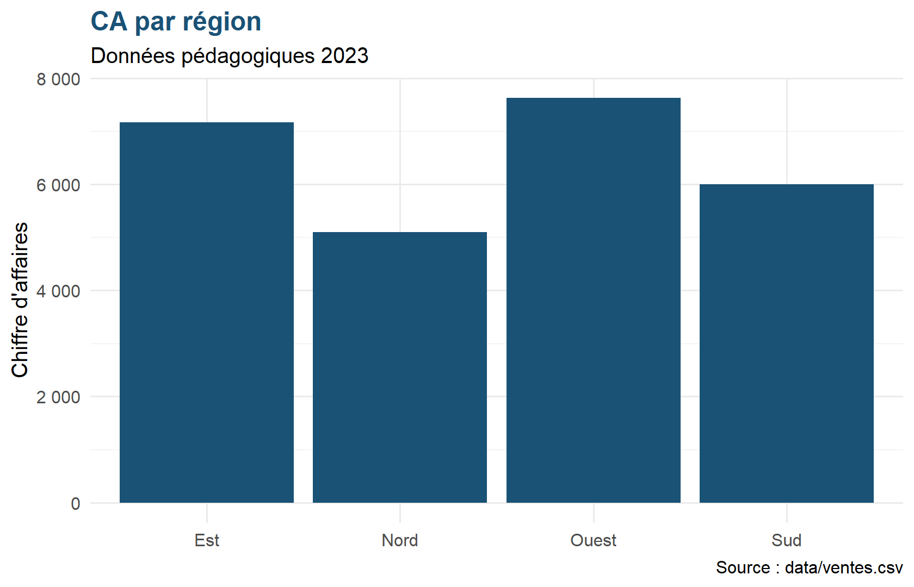
8.13 Couleurs
ggplot(ventes, aes(x = produit, fill = produit)) +
geom_bar(show.legend = FALSE) +
scale_fill_brewer(palette = "Set2") +
labs(title = "Effectifs par produit", x = NULL, y = "n") +
theme_minimal() +
theme(axis.text.x = element_text(angle = 30, hjust = 1))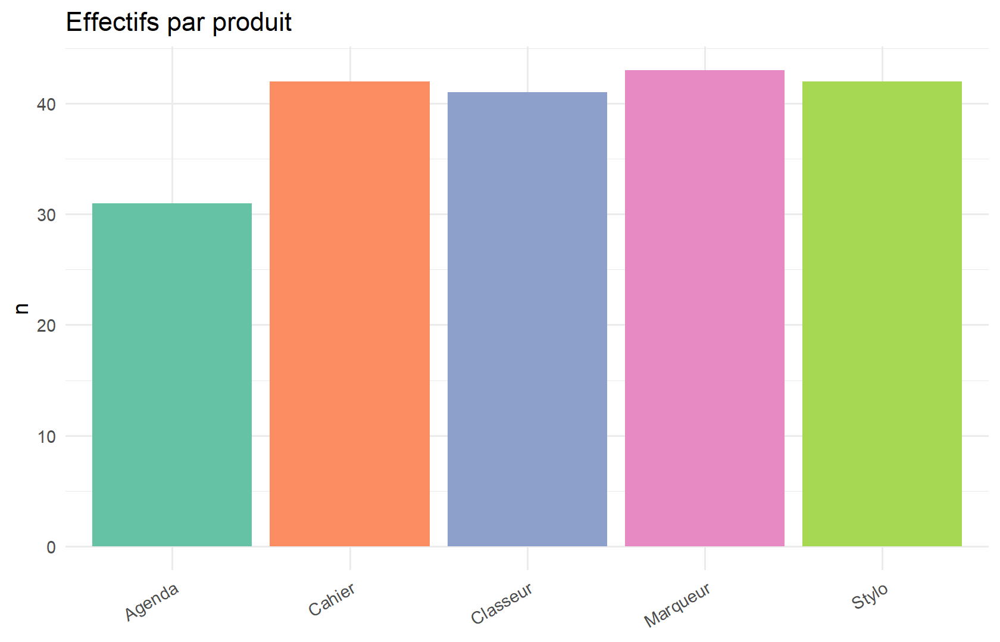
8.14 Facettes
ggplot(demo, aes(x = revenu_mensuel)) +
geom_histogram(bins = 15, fill = "#1a5276", color = "white") +
facet_wrap(~sexe) +
labs(title = "Revenus selon le sexe", x = "Revenu", y = "n") +
theme_minimal()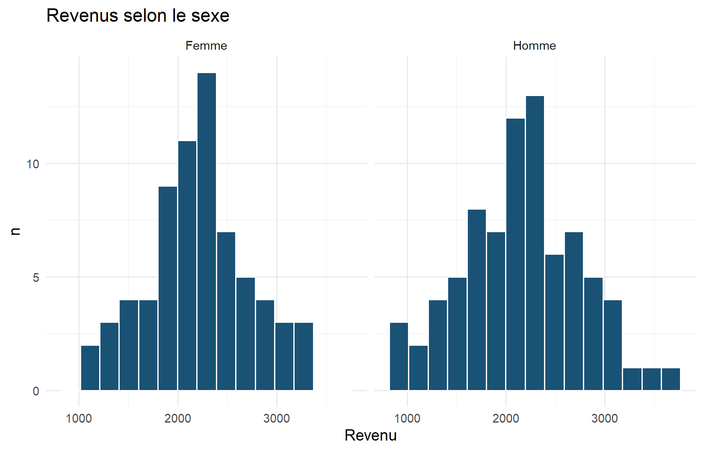
8.15 Exportation
p <- ggplot(ca_region, aes(region, ca)) + geom_col()
ggsave("outputs/ca_region.png", p, width = 7, height = 4, dpi = 150)dir.create("outputs", showWarnings = FALSE)
p <- ggplot(ca_region, aes(region, ca)) +
geom_col(fill = "#1a5276") +
theme_minimal()
ggsave("outputs/ca_region.png", p, width = 7, height = 4, dpi = 120)
file.exists("outputs/ca_region.png")#> [1] TRUE8.16 Grammaire ggplot2 (rappel)
ggplot(donnees, aes(...)) +
geom_*() +
scale_*() +
facet_*() +
labs() +
theme_*()8.17 Erreurs courantes
| Erreur | Pourquoi c’est problématique |
|---|---|
| Camembert à 10 catégories | Illisible ; préférer barres |
| Tronquer l’axe Y sans le dire | Exagère les différences |
| Trop de couleurs / 3D | Charge cognitive, biais |
| Nuage de points surabondant | Surplotting → alpha, hexbins |
| Titre vague (« Graphique 1 ») | Aucune information |
8.18 Mini-collection pour un rapport
p1 <- ggplot(ca_region, aes(reorder(region, ca), ca)) +
geom_col(fill = "#1a5276") + coord_flip() +
labs(title = "A — CA par région", x = NULL, y = "CA") + theme_minimal()
p2 <- ggplot(meteo_mois, aes(mois, temp)) +
geom_line(color = "#148f77") +
labs(title = "B — Température mensuelle", x = NULL, y = "°C") + theme_minimal()
p1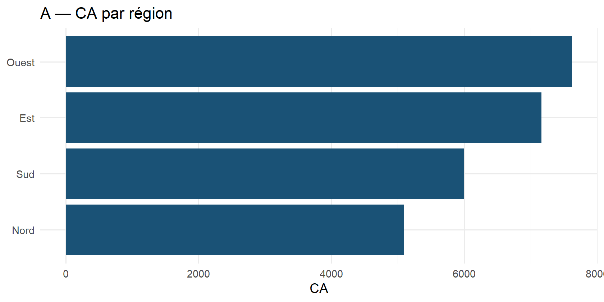
p2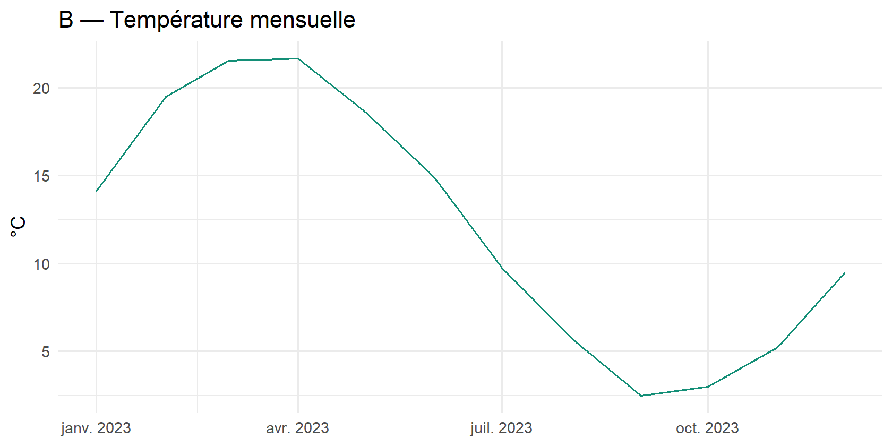
8.19 Exercices
8.19.1 Niveau 1
- Histogramme de
temperature_c(meteo). - Barres du nombre de ventes par
produit.
8.19.2 Niveau 2
- Scatter
agevsrevenu_mensuelcoloré parsexe. - Boxplot de
montantparproduit.
8.19.3 Niveau 3
- Facette de l’histogramme des montants par région.
- Exportez un graphique en PNG dans
outputs/.
8.20 Corrections
ggplot(meteo, aes(temperature_c)) +
geom_histogram(bins = 25, fill = "#148f77", color = "white") +
theme_minimal()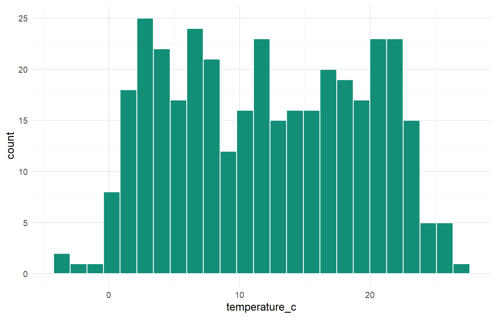
ggplot(ventes, aes(produit)) + geom_bar(fill = "#1a5276") + theme_minimal()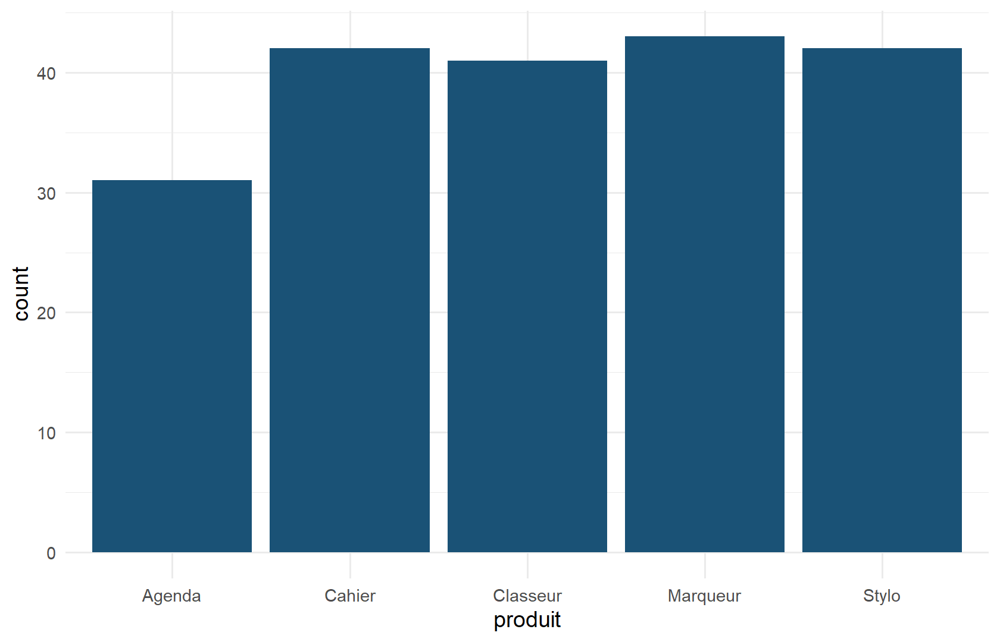
ggplot(demo, aes(age, revenu_mensuel, color = sexe)) +
geom_point(alpha = 0.7) + theme_minimal()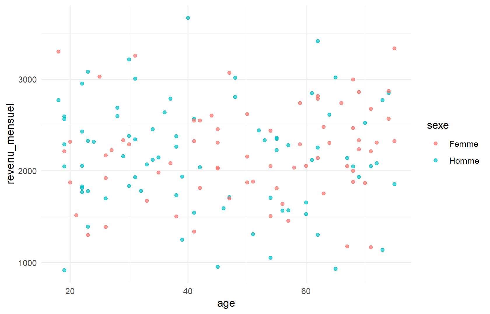
ggplot(ventes, aes(produit, montant)) +
geom_boxplot() +
theme_minimal() +
theme(axis.text.x = element_text(angle = 30, hjust = 1))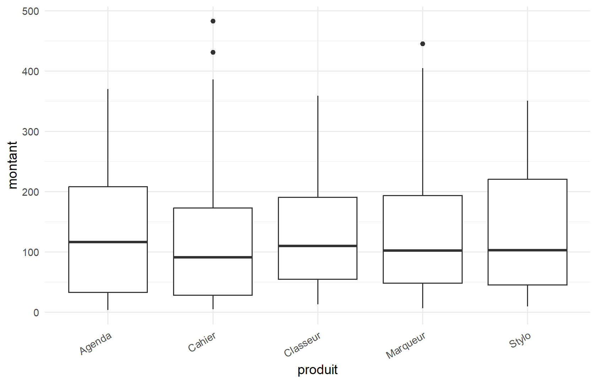
ggplot(ventes, aes(montant)) +
geom_histogram(bins = 20, fill = "#1a5276") +
facet_wrap(~region) +
theme_minimal()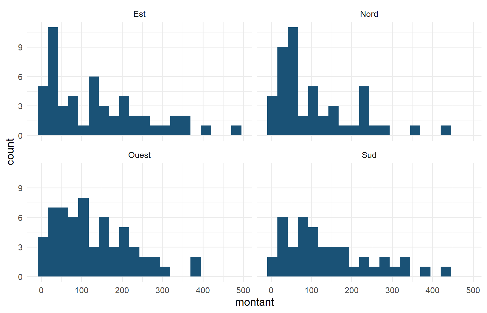
8.21 Points clés
- Le type de geom suit le type de variable et la question.
ggplot2compose des couches ; gardez le message simple.- Toujours légender et contextualiser (source, unités, période).
8.22 Ressources
- Wickham (2016), https://ggplot2.tidyverse.org/
8.23 Suite
Chapter 9 : passer de la description à l’inférence et à la régression.